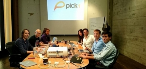
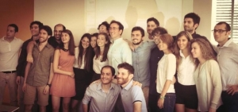

")


Giacomo Putignano, 25 anni, ha fatto InnovAction Lab nel 2013 durante il suo ultimo anno di master di un double degree program che prevedeva due lauree, una in Cina e una in Italia. Mentre stava in Cina gli è venuta l'idea di WalletSaver, startup di cui oggi è CEO.
Leggi tutto...

Armando Iandolo ha 25 anni ed è un ex studente di ingegneria. Prima di iscriversi a InnovAction Lab aveva creato Surgery Academy, di cui oggi è CEO e a cui ora lavora con un team che comprende altri tre innlabber. Insieme hanno vinto un grant della Call for Ideas di TIM#WCAP 2014 e hanno seguito il programma dell'acceleratore di Working Capital di Milano, dove tutt’ora si trova il loro quartier generale.
Leggi tutto...

Andrea Pastina, 34 anni, CEO di Pubster, la prima app che ti offre da bere, è alla sua seconda startup dopo InnovAction Lab. La prima è stata quella che si definirebbe un fallimento, se non fosse che da quel fallimento Andrea ha imparato tante cose che l'hanno portato a fondare una seconda azienda. Ecco la sua storia.
Leggi tutto...

Dopo aver frequentato InnovAction Camp nel 2013 Giuseppe Arrigo, 28enne di Messina, è tornato a fare quello che faceva prima: l’imprenditore. Ha però cominciato a farlo in maniera radicalmente diversa e questo ha cambiato tutto. Forte dell’esperienza del Camp, Giuseppe è riuscito a creare attorno a sé un gruppo di persone che si riunisce una volta al mese a Messina per parlare di argomenti legati al mondo delle startup e dell’imprenditoria giovanile. Ecco il racconto della sua esperienza.
Leggi tutto...
Dario De Angelis è ingegnere aerospaziale di 24 anni che negli ultimi due anni ha completamente cambiato attività. Oggi lavora a Dubai come digital marketing manager di Docebo, la terza piattaforma al mondo per la formazione aziendale in ambito e-learing. Un anno e mezzo fa invece aveva appena lanciato la sua startup, Makoo, nata a InnovAction Lab 2013. Ecco cos'è successo nel frattempo.
Leggi tutto...
11
Nov
Iovel Fessaha ha 31 anni ed è uno studente di ingegneria dei sistemi. È nato e cresciuto in Italia da genitori eritrei. Si sta laureando con una tesi sull’intelligenza computazionale, studiando algoritmi ispirati alla teoria dell’evoluzione. In questo post ci ha raccontato com’è cambiato radicalmente durante i tre mesi di InnLab. Ho tanti amici che sono stati in America e mi hanno raccontato un po’ del mondo delle startup d’Oltreoceano. Quando ho fatto InnovAction Lab mi sono reso conto che fra la nostra realtà e i loro racconti non c’era poi tutta questa differenza.
Leggi tutto...
Antonio Musumeci è nel giro delle startup fin da quando era all’università, che ha concluso circa tre anni fa. Nel 2013 ha partecipato a InnovAction Camp, quello famoso per il team building sul campo da rugby sotto il diluvio. Oggi ha una propria azienda di consulenza, nata da due progetti diversi di startup, e si occupa di digital marketing per l’acceleratore Working Capital di Catania. Di seguito ci racconta la sua esperienza di imprenditore.
Leggi tutto...
05
Nov
Enrico Bruschini è stato uno degli alumni di InnovAction Lab 2012. Oggi è COO di Pick1, una startup italo-americana con base a San Francisco che dopo esser passata per Startup Chile ha raccolto 1,8 milioni di dollari in USA da fondi come 500Startups e con angel del calibro di Jim Pallotta, founder di Raptor Ventures, Oliver Flogel, ex CEO di Telefonica Chile, Wilson Pais, head of innovation di Microsoft e Gonzalo Begazo, ex finance manager di Google. Ecco il racconto della sua esperienza.
Leggi tutto...
Da poco più di due settimane sono partite, praticamente in contemporanea, le edizioni di InnovAction Lab 2014 a Roma e Milano. Quest’anno siamo stati in più di 25 Atenei, abbiamo incontrato centinaia di ragazzi.
Negli ultimi quattro anni ne abbiamo incontrati migliaia.
Ogni volta che diciamo cose come “fare InnovAction Lab è appena compatibile con le funzioni vitali primarie” o “per due mesi preparatevi a fare fatica come mai in vita vostra” vediamo un po’ di scetticismo. In alcuni però vediamo anche una luce che si accende.
Leggi tutto...Racconto dell’esperienza vissuta per entrare a far parte di una delle aziende più gettonate del momento.
Se parliamo di Startup web di successo, una tra le più importanti degli ultimi anni è sicuramente AirBnb, ovvero la piattaforma che mette in contatto “Host” (persone che affittano un posto letto, una casa o addirittura un castello) con i Guest “(persone in cerca di un posto dove passare la notte, appunto).
Ma oggi non trattiamo le dinamiche che regolano questo business, ne la sua storia e/o straordinaria evoluzione: parliamo del delle dinamiche che hanno accompagnato le fasi di selezione di un giovane che ambisce ad entrare alla “corte di AirBnb”.
Leggi tutto...POST RECENTI
-

-
-

-

-

Info e Contatti
-
Per qualsiasi tipo di comunicazione o feedback, è possibile contattare i membri di InnovAction Lab all'indirizzo email
Questo indirizzo email è protetto dagli spambots. E' necessario abilitare JavaScript per vederlo.
Scorciatoie
GO SOCIAL
-
Seguici sui Social Network
Copyrights
-
©2014 InnovAction Lab
Powered by

Tech Sponsor